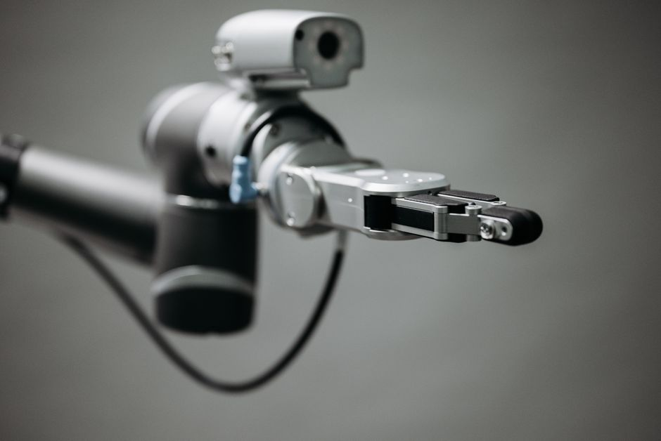

Imagine a world where robots aren't just powerful machines working behind cages, but friendly, intelligent partners working right alongside you, sharing tasks and making your job easier and safer. This isn't a scene from a sci-fi movie; it's the reality brought to us by Collaborative Robots, or Cobots! These amazing machines are transforming industries and opening up new possibilities for human-robot teamwork, especially right here in India's booming manufacturing and tech sectors.
What are Cobots? The Friendly Face of Robotics
For decades, industrial robots have been powerful workhorses, performing repetitive, heavy, or dangerous tasks with incredible precision and speed. However, they typically operate in segregated zones, fenced off from humans to ensure safety due to their speed, power, and lack of awareness of human presence. Enter the cobot!
Cobots are a new generation of robots designed specifically to work safely in close proximity to humans, often without the need for safety cages. The "co" in cobot stands for "collaborative," highlighting their core purpose: to collaborate with human operators. Think of them as intelligent assistants, ready to lend a hand without posing a threat.
Key characteristics that set cobots apart include:
- Safety Features: Built-in sensors and software that allow them to detect human presence and stop or slow down to avoid collisions. They often have limited force and power, and rounded, compliant designs.
- Ease of Use: Many cobots can be programmed through "teach by demonstration" or intuitive graphical user interfaces, making them accessible even to those without deep programming knowledge.
- Flexibility: They are typically lighter and more compact, allowing for easy redeployment to different tasks and workstations.
- Human-Robot Interaction: Designed for direct interaction, enabling humans and robots to share the same workspace and even physically interact during tasks.
Why Cobots are a Game-Changer
Cobots aren't just a novelty; they represent a significant leap forward in automation, bringing a host of benefits that are changing how we think about work and productivity.
Safety First, Always
This is perhaps the most defining feature of cobots. Unlike traditional industrial robots, which often require extensive safety guarding, cobots are engineered with safety at their core. They incorporate advanced sensors, force-limiting technology, and sophisticated control systems that allow them to operate safely alongside humans. If a cobot detects an unexpected contact or a human entering its workspace, it can immediately slow down or stop, preventing injuries.
"The true power of cobots lies not in replacing humans, but in augmenting human capabilities, making workplaces safer and more efficient through seamless collaboration."
- Dr. Rakesh Kumar, Robotics Ethicist
Ease of Programming and Deployment
One of the biggest hurdles for traditional robotics adoption, especially for small and medium-sized enterprises (SMEs), has been the complexity and cost of programming. Cobots address this head-on. Many cobots can be programmed using intuitive methods like "lead-through programming," where an operator physically moves the robot arm to desired positions, or through user-friendly graphical interfaces. This significantly reduces setup time and the need for specialized robotics engineers.
Imagine teaching a robot to pick up an object simply by guiding its arm through the motion, much like you'd show a friend how to do something! Here's a simplified conceptual example of how a cobot might be programmed for a common task:
// Program for a simple "Pick-and-Place" task
// Cobot assists a human in assembling a product by fetching components
START PROGRAM
// Step 1: Wait for human signal (e.g., foot pedal press or sensor detection)
WAIT_FOR_HUMAN_READY()
// Step 2: Move to the component supply tray
MOVE_TO_POSITION(Tray_X, Tray_Y, Tray_Z)
GRIPPER_CLOSE() // Pick up the component (e.g., a small screw)
// Step 3: Move to the assembly area where the human is working
MOVE_TO_POSITION(Assembly_X, Assembly_Y, Assembly_Z)
// Step 4: Wait for human to be ready to receive the component
WAIT_FOR_HUMAN_HAND_PRESENT() // Ensures the human is ready and safe
// Step 5: Gently release the component into human's hand or designated spot
GRIPPER_OPEN()
// Step 6: Move back to a safe, neutral "home" position, out of the way
MOVE_TO_HOME_POSITION()
// Step 7: Repeat the process for the next component or wait for new instructions
LOOP_UNTIL_STOP_SIGNAL()
END PROGRAM
Flexibility and Adaptability
Cobots are often smaller, lighter, and more portable than their industrial counterparts. This means they can be easily moved and reconfigured for different tasks on a production line. This flexibility is invaluable for businesses that need to quickly adapt to changing production demands or produce a variety of products in smaller batches. They can be mounted on mobile platforms, making them even more versatile.
Cost-Effectiveness
While any advanced technology requires an investment, cobots often have a lower total cost of ownership compared to traditional automation. Their easier integration, reduced need for safety infrastructure, and quicker programming translate into faster return on investment (ROI), making advanced automation accessible to a wider range of businesses, including many in India.
Where Do Cobots Shine? Real-World Applications
Cobots are proving their worth across a diverse range of industries, augmenting human workers in various tasks:
- Manufacturing and Assembly: Assisting with tasks like screwing, gluing, polishing, quality inspection, and material handling. They can hold parts in place while a human performs a delicate operation.
- Packaging and Palletizing: Efficiently picking and placing items into boxes or onto pallets, reducing strain on human workers.
- Quality Control: Performing repetitive inspections, like checking for defects, with high accuracy and consistency.
- Healthcare: In laboratories, they can handle samples, dispense liquids, and perform repetitive tests. They are also being explored for assisting in rehabilitation therapies and even surgical support.
- Logistics and Warehousing: Helping with order fulfillment by picking items, sorting packages, and moving goods within a warehouse.
Cobots in India: A Growing Trend
India's manufacturing sector is undergoing a massive transformation with initiatives like "Make in India." Cobots are playing a crucial role in this evolution. Indian industries, especially SMEs, are increasingly adopting cobots to enhance productivity, improve product quality, and address labor challenges, all while keeping human workers at the center of operations. They help bridge the gap between manual labor and full automation, offering a flexible and scalable solution for growth.
Learning with Cobots: Your Future in Robotics
For students and aspiring engineers, the rise of cobots opens up exciting new career paths and learning opportunities. Understanding how these intelligent machines work, how to program them, and how to design collaborative workspaces will be invaluable skills for the future workforce. Here at MakerWorks, we believe in hands-on learning, and cobot technology offers a fantastic platform for exploring:
- Robotics Fundamentals: Kinematics, sensors, actuators.
- Programming: Logical thinking, sequence planning, basic coding.
- Design Thinking: How to integrate robots into human workflows efficiently and safely.
- Problem-Solving: Identifying tasks suitable for collaboration and optimizing processes.
Engaging with cobot simulations or even small-scale educational cobot kits can provide a practical understanding of how automation can enhance human capabilities, rather than replace them. It's about learning to work with technology to build a smarter, more efficient future.
The Future is Collaborative
The journey of cobots is just beginning. As artificial intelligence (AI) and machine learning (ML) capabilities become more integrated, cobots will become even smarter, more adaptive, and capable of understanding human intent with greater nuance. Imagine cobots learning new tasks simply by observing a human, or proactively offering assistance based on context. The future promises even more seamless and intuitive human-robot collaboration, redefining the workplace as we know it.
Conclusion and Call to Action
Collaborative robots are not just another piece of machinery; they represent a paradigm shift in how humans and machines interact. They offer a future where productivity is boosted, safety is prioritized, and human ingenuity is amplified by intelligent robotic partners. For students, educators, and robotics enthusiasts in India, this is an incredibly exciting field to explore.
Are you ready to be part of this collaborative revolution? Dive deeper into robotics, learn to code, and explore the endless possibilities that cobots bring. Visit MakerWorks to discover our programs and resources that can help you embark on your journey into the fascinating world of robotics!